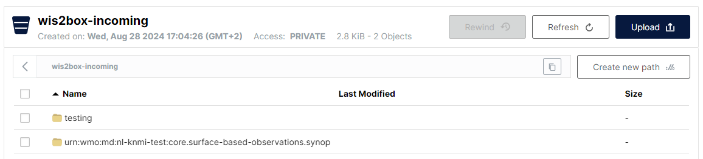

Monitoring WIS2 Notifications
Learning outcomes
By the end of this practical session, you will be able to:
- trigger the wis2box workflow by uploading data in MinIO using the
wis2box data ingestcommand - view warnings and errors displayed in the Grafana dashboard
- check the content of the data being published
Introduction
The Grafana dashboard uses data from Prometheus and Loki to display the status of your wis2box. Prometheus store time-series data from the metrics collected, while Loki store the logs from the containers running on your wis2box instance. This data allows you to check how much data is received on MinIO and how many WIS2 notifications are published, and if there are any errors detected in the logs.
To see the content of the WIS2 notifications that are being published on different topics of your wis2box you can use the 'Monitor' tab in the wis2box-webapp.
Preparation
This section will use the "surface-based-observations/synop" dataset previously created in the Configuring datasets in wis2box practical session.
Login to your student VM using your SSH client (PuTTY or other).
Make sure wis2box is up and running:
cd ~/wis2box-1.0.0rc1/
python3 wis2box-ctl.py start
python3 wis2box-ctl.py status
Make sure your have MQTT Explorer running and connected to your instance using the public credentials everyone/everyone with a subscription to the topic origin/a/wis2/#.
Make sure you have access to the MinIO web interface by going to http://<your-host>:9000 and you are logged (using WIS2BOX_STORAGE_USERNAME and WIS2BOX_STORAGE_PASSWORD from your wis2box.env file).
Make sure you have a web browser open with the Grafana dashboard for your instance by going to http://<your-host>:3000.
Ingesting some data
Please execute the following commands from your SSH-client session:
Copy the sample data file aws-example.csv to the the directory you defined as the WI2BOX_HOST_DATADIR in your wis2box.env file.
cp ~/exercise-materials/monitoring-exercises/aws-example.csv ~/wis2box-data/
Make sure you are in the wis2box-1.0.0rc1 directory and login to the wis2box-management container:
cd ~/wis2box-1.0.0rc1
python3 wis2box-ctl.py login
Verify the sample data is available in the directory /data/wis2box/ within the wis2box-management container:
ls -lh /data/wis2box/aws-example.csv
Note
The WIS2BOX_HOST_DATADIR is mounted as /data/wis2box/ inside the wis2box-management container by the docker-compose.yml file included in the wis2box-1.0.0rc1 directory.
This allows you to share data between the host and the container.
Exercise 1: ingesting data using wis2box data ingest
Execute the following command to ingest the sample data file aws-example.csv to your wis2box-instance:
wis2box data ingest -p /data/wis2box/aws-example.csv --metadata-id urn:wmo:md:not-my-centre:core.surface-based-observations.synop
Was the data successfully ingested? If not, what was the error message and how can you fix it?
Click to reveal answer
You will see the following output:
Error: metadata_id=urn:wmo:md:not-my-centre:core.surface-based-observations.synop not found in data mappings
The error message indicates that the metadata identifier you provided does not match any of the datasets you have configured in your wis2box-instance.
Provide the correct metadata-id that matches the dataset you created in the previous practical session and repeat the data ingest command until you should see the following output:
Processing /data/wis2box/aws-example.csv
Done
Go to the MinIO console in your browser and check if the file aws-example.csv was uploaded to the wis2box-incoming bucket. You should see there is a new directory with the name of the dataset you provided in the --metadata-id option:

Note
The wis2box data ingest command uploaded the file to the wis2box-incoming bucket in MinIO in a directory named after the metadata identifier you provided.
Go to the Grafana dashboard in your browser and check the status of the data ingest.
Exercise 2: check the status of the data ingest
Go to the Grafana dashboard in your browser and check the status of the data ingest.
Was the data successfully ingested?
Click to reveal answer
The panel at the bottom of the Grafana home dashboard reports the following warnings:
WARNING - input=aws-example.csv warning=Station 0-20000-0-60355 not in station list; skipping
WARNING - input=aws-example.csv warning=Station 0-20000-0-60360 not in station list; skipping
This warning indicates that the stations are not defined in the station list of your wis2box. No WIS2 notifications will be published for this station until you add it to the station list and associate it with the topic for your dataset.
Exercise 3: add the test stations and repeat the data ingest
Add the stations to your wis2box using the station editor in wis2box-webapp, and associate the stations with the topic for your dataset.
Now re-upload the sample data file aws-example.csv to the same path in MinIO you used in the previous exercise.
Check the Grafana dashboard, are there any new errors or warnings ? How can you see that the test data was successfully ingested and published?
Click to reveal answer
You can check the charts on the Grafana home dashboard to see if the test data was successfully ingested and published.
If successful, you should see the following:

Exercise 4: check the MQTT broker for WIS2 notifications
Go to the MQTT Explorer and check if you can see the WIS2 Notification Message for the data you just ingested.
How many WIS2 data notifications were published by your wis2box?
How do you access the content of the data being published?
Click to reveal answer
You should see 6 WIS2 data notifications published by your wis2box.
To access the content of the data being published, you can expand the topic structure to see the different levels of the message until you reach the last level and review message content of one of the messages.
The message content has a "links" section with a "rel" key of "canonical" and a "href" key with the URL to download the data. The URL will be in the format http://<your-host>/data/....
Note that the data-format is BUFR and you will need a BUFR parser to view the content of the data. The BUFR format is a binary format used by meteorological services to exchange data. The data-plugins inside wis2box transformed the data from CSV to BUFR before publishing it.
Viewing the data content you have published
You can use the wis2box-webapp to view the content of the WIS2 data notifications that have been published by your wis2box.
Open the wis2box-webapp in your browser by navigating to http://<your-host>/wis2box-webapp and select the Monitoring tab:

In the monitoring-tab select your dataset-id and click "UPDATE"
Exercise 5: view the WIS2 notifications in the wis2box-webapp
How many WIS2 data notifications were published by your wis2box?
What is the air-temperature reported in the last notification at the station with the WIGOS-identifier=0-20000-0-60355?
Click to reveal answer
If you have successfully ingested the test data, you should see 6 WIS2 data notifications published by your wis2box.
To see the air-temperature measured for the station with WIGOS-identifier=0-20000-0-60355, click on the "INSPECT"-button next to the file for that station to open a pop-up window displaying the parsed content of the data file. The air-temperature measured at this station was 25.0 degrees Celsius.
Note
The wis2box-api container includes tools to parse BUFR files and display the content in a human-readable format. This is a not a core requirements for the WIS2.0 implementation, but was included in the wis2box to aid data publishers in checking the content of the data they are publishing.
Conclusion
Congratulations!
In this practical session, you learned how to:
- trigger the wis2box workflow by uploading data in MinIO using the
wis2box data ingestcommand - view the WIS2 notifications published by your wis2box in the Grafana dashboard and MQTT Explorer
- check the content of the data being published using the wis2box-webapp